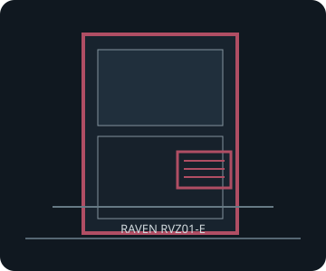

[ RAVEN RVZ01-E // ATX-PSU RISER CASE ]
SilverStone Raven RVZ01-E
382 × 105 × 350 mm (W × H × D), about 14 L; Mini-ITX/Mini-DTX chassis distinguished by support for a short standard ATX PSU.

FITMENT CAVEAT: This record describes the named model only. Published maxima can depend on revision, brackets, fan/radiator position, PSU cable routing and drive configuration; verify the exact manual and parts before purchase or assembly.
Specifications & fit
| Exact model | SilverStone Raven RVZ01-E |
|---|---|
| Motherboard sizes | Mini-ITX (170 × 170 mm) and Mini-DTX (203 × 170 mm); two expansion slots via the supplied riser. |
| PSU type and fit | Standard PS2/ATX up to 150 mm long; 140 mm is recommended for easier cable installation. The PSU cable bundle shares the narrow GPU/storage compartment. |
| GPU length and thickness | Up to 330 mm long × 149 mm wide/high, two-slot card position. SilverStone publishes the width/card envelope rather than an independent millimetre thickness; check shroud and power plugs. |
| CPU cooler height | Maximum height 83 mm. |
| Radiator and fan options | Two 120 mm case fans included and one additional 120 mm fan position. The model's referenced specification/manual lists fan positions; it does not confirm a radiator configuration. |
| Storage clearances | Four internal 2.5-inch drive positions. Drive placement and ATX PSU cabling share the slim internal volume; no external optical bay is listed for the E revision. |
| Compatibility notes | RVZ01-E is the ATX-PSU revision and is not interchangeable with the standard SFX RVZ01. Use the exact E manual and allow cable-bend room beside the riser and GPU. |
Compatibility & preservation notes
RVZ01-E is the ATX-PSU revision and is not interchangeable with the standard SFX RVZ01. Use the exact E manual and allow cable-bend room beside the riser and GPU.
- Record the case model/SKU, revision, included riser, brackets and manual version before changing hardware.
- Measure the actual GPU shroud, power connectors, cooler, radiator/fan stack and cable bend radii; do not assume listed maxima can coexist.
- Keep original drive trays, standoffs, fasteners, fan brackets and panel hardware with the enclosure.
Manufacturer sources
- SilverStone — Raven RVZ01-E product specificationsManufacturer page identifies the E model and its ATX PSU fit.
- SilverStone — Raven RVZ01-E manual (PDF)Manufacturer revision-specific installation and clearance diagrams.
Sources are manufacturer product documentation and the model-specific manual; consult the matching revision for assembly dimensions.